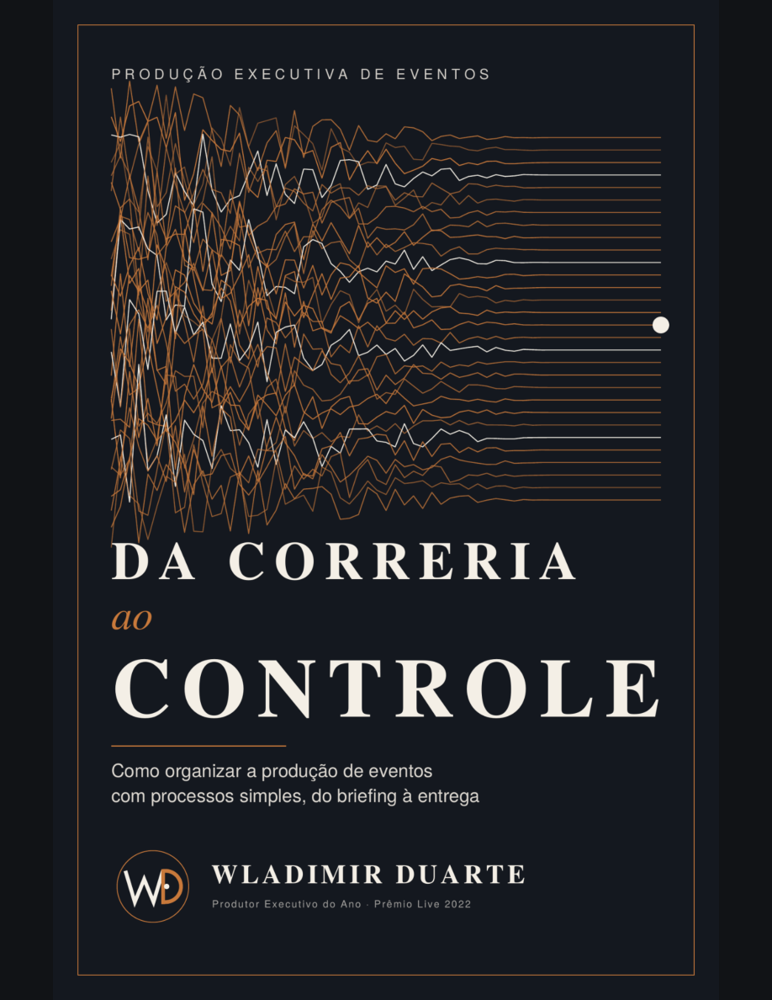

Da Correria
ao Controle
Como organizar a produção de eventos com processos simples, do briefing à entrega.
A correria faz parte do evento. A desorganização não precisa fazer.
Um livro de Wladimir Duarte, construído a partir de mais de 30 anos de experiências reais nos bastidores dos eventos.
Por que escrevi este livro?
Uma apresentação rápida, feita por quem vive a produção de eventos na prática.
Assista ao vídeo e conheça a proposta de Da Correria ao Controle.
Mais clareza. Menos improviso.
Uma visão organizada das etapas que fazem um evento acontecer.
Ideias práticas para estruturar informações, responsabilidades e rotinas.
Reflexões e aprendizados de quem trabalha há décadas na área.
Seu próximo evento começa com mais organização.
Preço especial de lançamento até 15/11/2026
Após o pagamento, envie o comprovante ao autor pelo mesmo canal em que recebeu este link. O livro é entregue pessoalmente em PDF e EPUB. Não há download automático nesta página.
Leitura descomplicada
Recebo o livro em qual formato?
Você recebe os arquivos digitais PDF e EPUB para escolher a forma de leitura que preferir.
Posso ler no Kindle?
Sim. Você pode enviar o arquivo EPUB para o Kindle pelo serviço gratuito Send to Kindle, da Amazon, usando a mesma conta Amazon do seu dispositivo.
Como recebo o arquivo depois de pagar?
O autor confirma o pagamento e envia o livro diretamente pelo canal de atendimento combinado. A entrega não é automática.